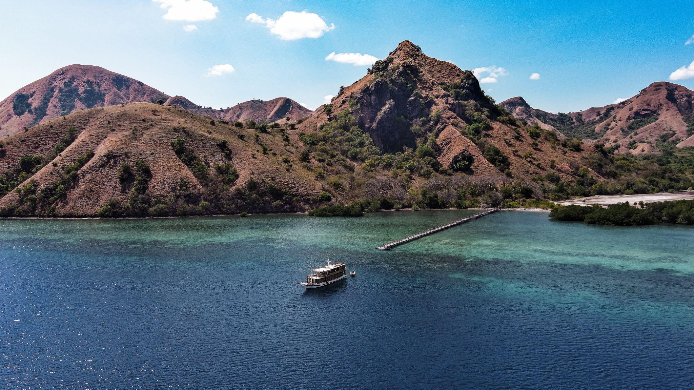

Manjarite Moments: Float in glassy shallows, spot tiny reef life & reset your pace with Kapalsantai.
Manjarite: Calm Snorkeling in Crystal-Clear Waters
Tucked in a sheltered bay not far from Labuan Bajo, Manjarite offers glassy water and gentle, shallow bottoms—perfect if you want easy snorkeling without strong currents. Many sailing routes often include Manjarite as a favorite stop thanks to its good visibility and simple access.
Why So Special?
Manjarite is known for calm conditions, shallow depth, and soft corals that are friendly for beginners.
- Easy snorkeling: Sandy–seagrass bottom with mellow coral patches—great for first-timers.
- Clear water: Blue-green hues that flatter both eyes and camera.
- Iconic jetty: Boats usually stop near a wooden jetty—handy for getting in the water.
Where It Is & How to Get There
Manjarite sits within the waters around Komodo National Park, easily reached from Labuan Bajo.
- With boat: About 45–60 minutes from Labuan Bajo (route & conditions dependent).
- Common pairings: Kelor Island, Bidadari/Kanawa, or Taka Makassar & Manta Point for a balanced day of light trekking, chill time, and snorkeling.
Pro tip: Ask your crew to come when the sea is calm (morning or late afternoon) for comfy visibility and a relaxed vibe.
Best Time to Visit
- Dry season (around April–October): Generally calmer seas.
- Weather still matters: Conditions can change—follow your captain/guide’s advice.
Things to Do at Manjarite
- Easy Snorkeling Right off the boat you’ll spot small reef fish, soft corals, and the occasional sea star over sandy patches.
- Learn & Warm Up New to snorkeling? Manjarite is ideal for practicing breathing, using fins, and getting comfy with your mask.
- Float & Chill Prefer to take it slow? Just float with a life vest and soak up those soothing blues.
Tips
- Get the fit right: Make sure your mask seals well to avoid fogging or leaks.
- Respect the reef: Don’t stand on or touch corals; enter/exit over sand.
- Follow the briefing: Even in calm spots, watch for other boats and stick to crew guidance.
What to Bring
- Mask–snorkel (if not provided), fins
- Reef-safe sunscreen, hat, rash guard
- Towel/light blanket & change of clothes
- Dry bag for phone/camera
- Refillable water bottle & light snacks
Good to Know
- No Facilities! Manjarite is a stretch of island with no facilities whatsoever. Toilets, food, and other necessities will be available only on your boat.
- Park fees: All set with Kapalsantai package!
- Photos: Simple underwater shots work well; above water, wide-angle from the boat deck or jetty looks great.
Ready to Float Your Worries Away?
Manjarite is all about a slow, comfy rhythm—float in calm water, watch tiny fish glide by, and savor the pause between headline spots. Pair it with a light-trek island and a manta/coral stop for a well-rounded Labuan Bajo day.
Show us your glow-up at Manjarite and tag us @kapalsantai on Instagram!
